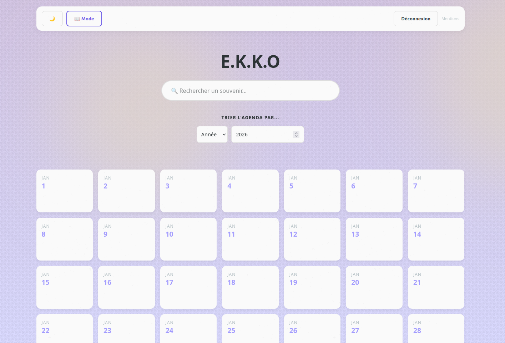

EKKO
Contexte : J'ai toujours été très attaché à l'idée de garder une trace des souvenirs et des événements que l'on ne veut pas oublier.
Le problème : Aucun agenda souvenir ne me convenait réellement. Soit ils étaient trop complexes pour stocker des images, soit ils étaient payants ou truffés de publicités. Il y avait toujours un inconvénient qui me poussait à désinstaller ces solutions rapidement.
C'est pour cette raison que j'ai créé EKKO : un agenda souvenir en ligne 100 % gratuit. Accessible en un clic, il propose une interface minimaliste et ergonomique dédiée à un seul objectif : vos souvenirs.
EKKO est une plateforme sécurisée, hébergée sur Supabase.
Lien du site : cliquez ici.
À propos
J'ai pu, à travers ce projet, me familiariser avec les compétences suivantes :
- Le développement WEB (Stack HTML / CSS / JS)
- Le versionnage de code (grâce à GitLab)
- Le travail lié au développement d'une interface WEB
- L'autonomie complète en situation réelle de projet informatique
Galerie & Rendu
